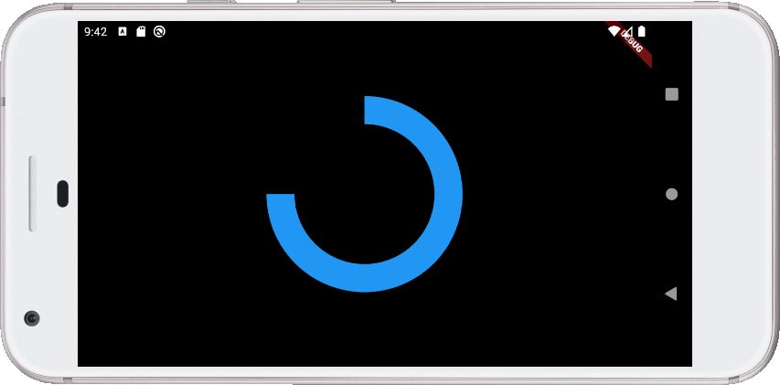
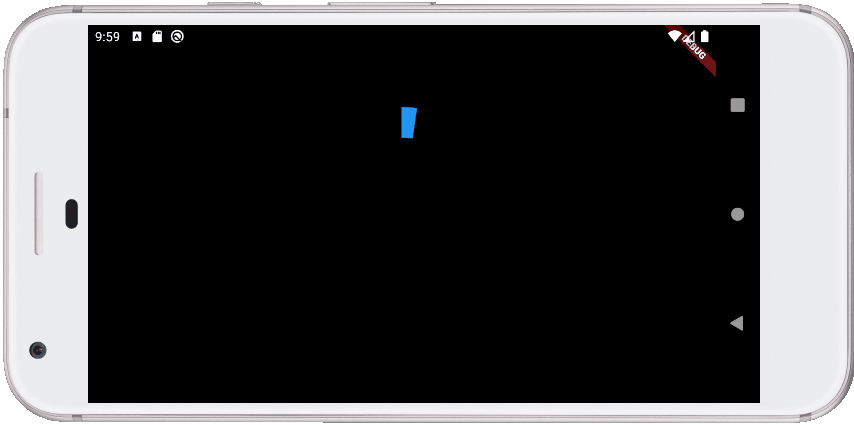

動畫的應用之一，就是結合繪圖，例如，來做個重複畫圓表示下載中之類的動畫，為此，必須先有個可以畫圓餅的元件，這可以如下簡單地實作：
import 'package:flutter/material.dart';
import 'dart:math';
void main() => runApp(
MaterialApp(
home: Pie(radius: 100, sweepAngle: pi * 1.5),
)
);
class Pie extends StatelessWidget {
final startAngle = pi * 1.5;
final double radius;
final double sweepAngle;
Pie({this.radius, this.sweepAngle});
@override
Widget build(BuildContext context) {
return CustomPaint(
size: Size.infinite,
painter: PiePainter(radius: radius, sweepAngle: sweepAngle),
);
}
}
class PiePainter extends CustomPainter {
final startAngle = pi * 1.5;
final double radius;
final double sweepAngle;
PiePainter({this.radius, this.sweepAngle});
@override
void paint(Canvas canvas, Size size) {
Paint paint = Paint()
..color = Colors.blue
..strokeWidth = radius / 3
..style = PaintingStyle.stroke;
canvas.drawArc(
Rect.fromCircle(center: Offset(size.width / 2, size.height / 2), radius: radius),
startAngle, sweepAngle,
false,
paint
);
}
@override
bool shouldRepaint(PiePainter other) => other.radius != radius || other.sweepAngle != sweepAngle;
}
執行起來的畫面如下：

接著，因為 AnimatedWidget 的既有子類沒有適合的選項，這邊就直接使用 AnimatedBuilder，
import 'package:flutter/material.dart';
import 'dart:math';
void main() => runApp(
MaterialApp(
home: Center(
child: AnimatedPie(radius: 100, duration: Duration(seconds: 2)),
),
)
);
class AnimatedPie extends StatefulWidget {
final double radius;
final Duration duration;
AnimatedPie({this.radius, this.duration});
@override
State<StatefulWidget> createState() => _AnimatedPie();
}
class _AnimatedPie extends State<AnimatedPie> with SingleTickerProviderStateMixin {
AnimationController _animation;
@override
void initState() {
super.initState();
_animation = AnimationController(
// 0 到 2 * pi
lowerBound: 0,
upperBound: pi * 2,
duration: widget.duration,
vsync: this,
)..repeat(); // 不斷重複
}
@override
void dispose() {
_animation.dispose();
super.dispose();
}
@override
Widget build(BuildContext context) {
return AnimatedBuilder(
animation: _animation,
builder: (_, __) {
// 將 _animation.value 的值傳入，作為圓餅的徑度
return Pie(radius: widget.radius, sweepAngle: _animation.value);
}
);
}
}
class Pie extends StatelessWidget {
...略
}
class PiePainter extends CustomPainter {
...略
}
完成的效果如下：
